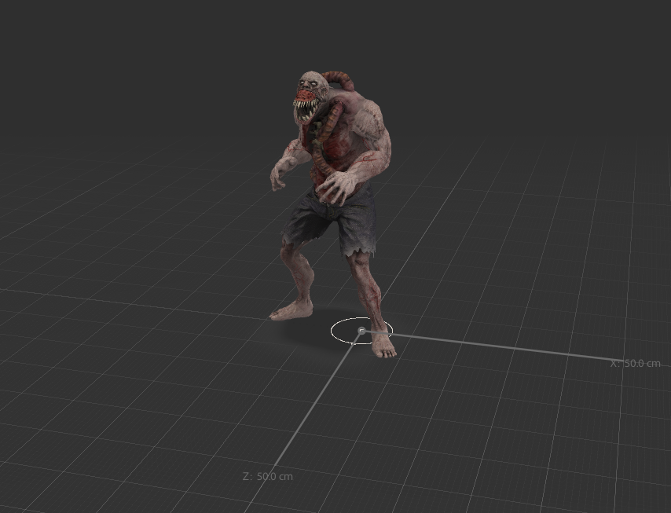
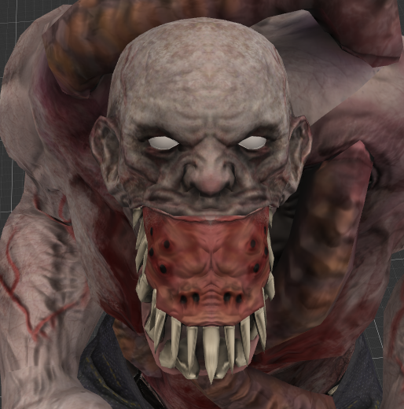
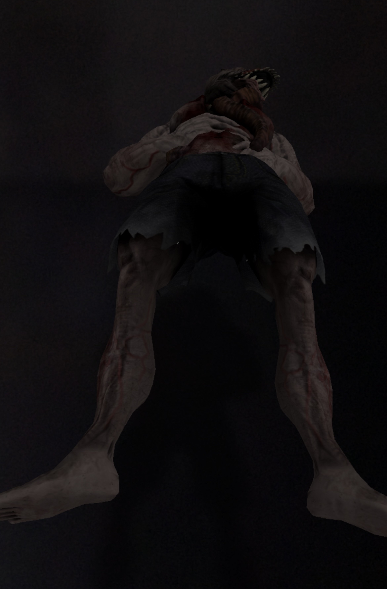
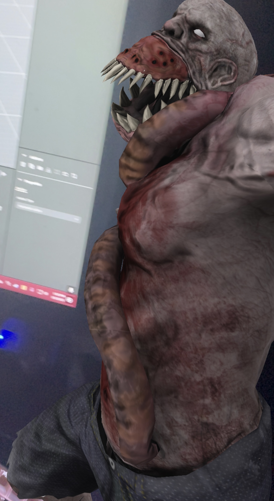
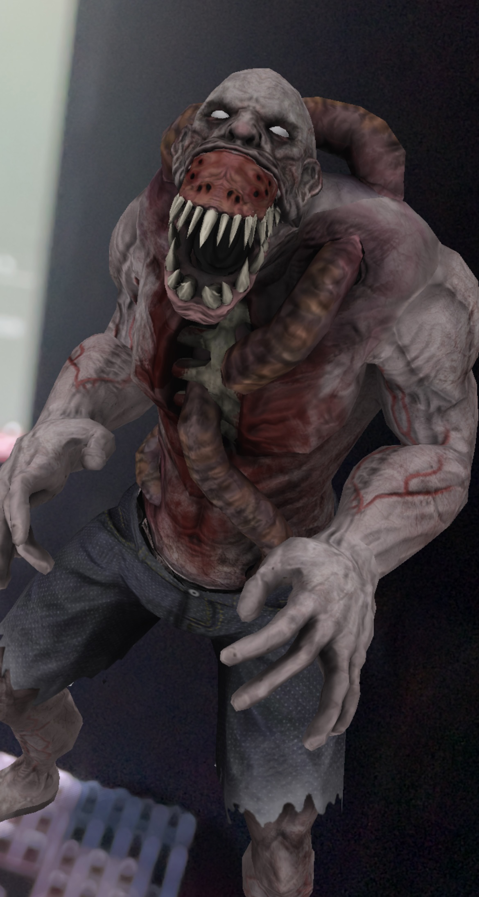

This image serves as the title's image, as the zombie is the main part of my project!

Overview
This experience is simple. Before you enter the zombie's proximity, it is sleeping. But as you get closer, it then awakes and attempts to swing at you. Music plays throughout the experience.

Artist's statement / manifesto
I decided to make this because it sounded like a cool idea. It makes sense in AR as it is a good test for animations, proximity and sound usage.
More photos

,Zombie sleeping (Before you first get close)

,Zombie mid swing

,Zombie after the swing
Credits
,The music that plays throughout the experience is called "Scary Horror Music". I found it on FreeSound (https://freesound.org/people/Audio_Dread/sounds/528045/)
,The roar that the zombie makes when you approach it is called "Monster Roar". I found this on FreeSound as well. (https://freesound.org/people/mitchanary/sounds/505126/)
,The zombie itself and it's animations are from Mixamo.